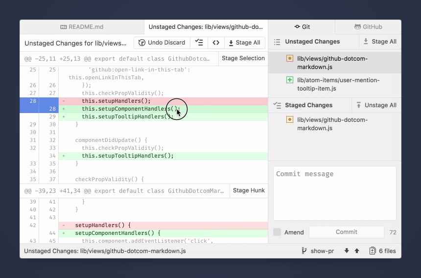
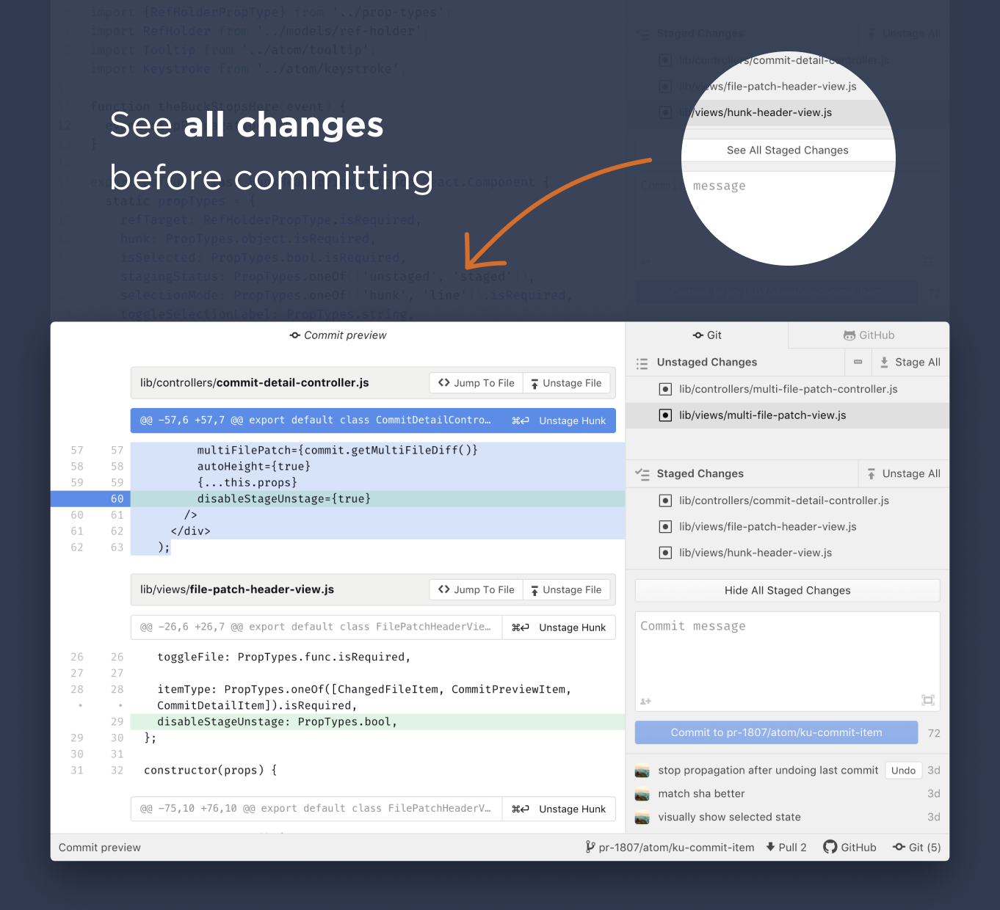
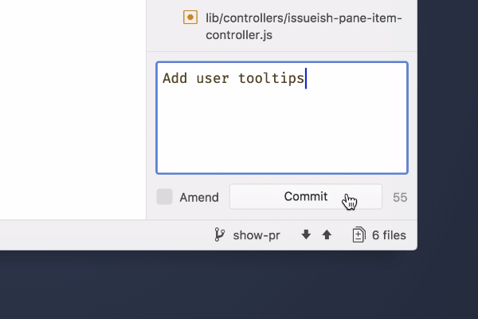
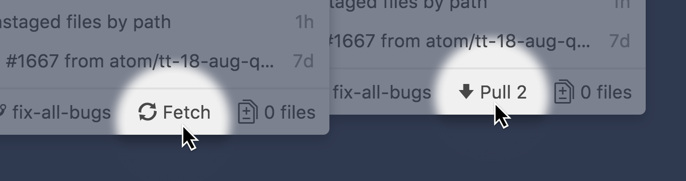
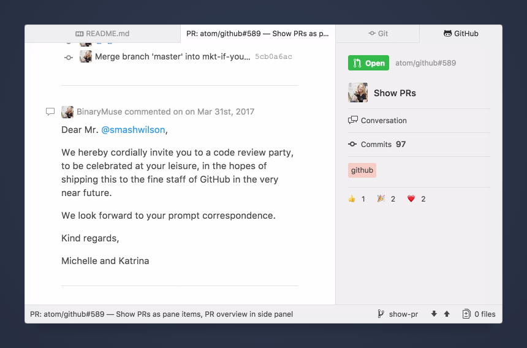
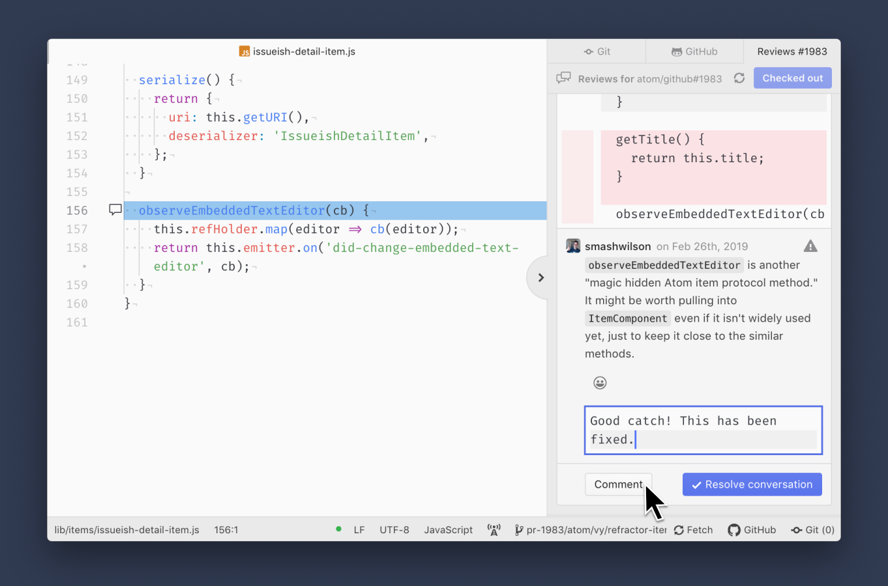

Chapter 1: Getting Started
Chapter 2: Using Atom
- Atom Packages
- Moving in Atom
- Atom Selections
- Editing and Deleting Text
- Find and Replace
- Snippets
- Autocomplete
- Folding
- Panes
- Pending Pane Items
- Grammar
- Version Control in Atom
- GitHub package
- Writing in Atom
- Basic Customization
- Summary
Chapter 3: Hacking Atom
- Tools of the Trade
- The Init File
- Package: Word Count
- Package: Modifying Text
- Package: Active Editor Info
- Creating a Theme
- Creating a Grammar
- Creating a Legacy TextMate Grammar
- Publishing
- Iconography
- Debugging
- Writing specs
- Handling URIs
- Cross-Platform Compatibility
- Converting from TextMate
- Hacking on Atom Core
- Contributing to Official Atom Packages
- Creating a Fork of a Core Package in atom/atom
- Maintaining a Fork of a Core Package in atom/atom
- Summary
Chapter 4: Behind Atom
- Configuration API
- Keymaps In-Depth
- Scoped Settings, Scopes and Scope Descriptors
- Serialization in Atom
- Developing Node Modules
- Interacting With Other Packages Via Services
- Maintaining Your Packages
- How Atom Uses Chromium Snapshots
- Summary
Appendix A: Resources
Appendix B: FAQ
- Is Atom open source?
- What does Atom cost?
- What platforms does Atom run on?
- How can I contribute to Atom?
- Why does Atom collect usage data?
- Atom in the cloud?
- What's the difference between an IDE and an editor?
- How can I tell if subpixel antialiasing is working?
- Why is Atom deleting trailing whitespace? Why is there a newline at the end of the file?
- What does Safe Mode do?
- I have a question about a specific Atom community package. Where is the best place to ask it?
- I’m using an international keyboard and keys that use AltGr or Ctrl+Alt aren’t working
- I’m having a problem with Julia! What do I do?
- I’m getting an error about a “self-signed certificate”. What do I do?
- I’m having a problem with PlatformIO! What do I do?
- How do I make Atom recognize a file with extension X as language Y?
- How do I make the Welcome screen stop showing up?
- How do I preview web page changes automatically?
- How do I accept input from my program or script when using the script package?
- I am unable to update to the latest version of Atom on macOS. How do I fix this?
- I’m trying to change my syntax colors from styles.less, but it isn’t working!
- How do I build or execute code I've written in Atom?
- How do I uninstall Atom on macOS?
- macOS Mojave font rendering change
- Why does macOS say that Atom wants to access my calendar, contacts, photos, etc.?
- How do I turn on line wrap?
- The menu bar disappeared, how do I get it back?
- How do I use a newline in the result of find and replace?
- What is this line on the right in the editor view?
Appendix C: Shadow DOM
Appendix D: Upgrading to 1.0 APIs
Appendix E: Atom server-side APIs
Improve this page
GitHub package
The github package brings Git and GitHub integration right inside Atom.
- Initialize
- Clone
- Branch
- Stage
- Discard
- Commit
- Amend and undo
- Publish and push
- Fetch and pull
- Resolve conflicts
- Create a Pull Request
- View Pull Requests
- Checkout a Pull Request
- Open any Issue or Pull Request
- View Pull Request review comments
- Navigate Pull Request review comments
- Respond to a Pull Request review comment
Most of the functionality lives within the Git and GitHub dock items.

There are different ways to access them, probably the most common way is through their keybindings:
- Open the Git panel: Ctrl+9
- Open the GitHub panel: Ctrl+8
Another way is from the menu: Packages -> GitHub -> Toggle Git Tab and Toggle GitHub Tab
Or you can also toggle the Git panel from the Status Bar by clicking on the changed files icon:

Initialize repositories
In case a project doesn't have a Git repository yet, you can create one from the Git panel.

Clone repositories
To clone a repository, run the GitHub: Clone command. In the dialog paste a URL of a repository and click "Clone". A new project will get added to the Tree View.

Branch
To open the branch tooltip, click the branch icon in the Status Bar. From there you can to create or switch branches.

Stage
After making some changes, stage anything you want to be part of the next commit. Choose between staging...
- All changes: Click the "Stage All" button in the "Unstaged Changes" bar.
- Files: Double-click a file or select a file and press Enter.
- Hunk: Click on the "Stage Hunk" button or select a hunk and press Enter.
- Lines: Click on a line (or drag on multiple lines) to select, then click on the "Stage Selection" button. Or use the Cmd-/Cmd-/ key to toggle from hunk mode to line mode, then press Cmd-EnterCtrl-Enter to stage just a single line.
Use the Cmd-LeftCtrl-Left or Cmd-RightCtrl-Right arrow key to switch between file list and the diff view. Unstaging can be done in the same way.

Discard changes
If you no longer want to keep some changes, you can discard them. It's similar to staging, but accessible behind a context menu.
- All changes: Click the ... menu in the "Unstaged Changes" header and choose "Discard All Changes".
- Files: Right-click a file (or multiple) and choose "Discard Changes".
- Hunk: Click on the trash icon in the top bar of a hunk.
- Lines: Right-click on a line (or multiple) and choose "Discard Selection".

Commit Preview
To double check all changes that are going into your next commit, click the "See All Staged Changes" button above the commit message box. It lets you see all of your staged changes in a single pane. This "commit preview" can also serve as an inspiration for writing the commit message.

Commit
Once you've staged your changes, enter a commit message. Feel free to describe the commit in more detail after leaving an empty line. Finalize by clicking the Commit button. If you need more space, click the expand icon at the bottom right. It will open a commit editor in the center.

To add multiple co-authors to a commit, click the "👤➕" icon in the bottom left corner of the commit message editor. Now you can search by name, email or GitHub username to give credit to a co-author.

Amend and undo
In case you forgot to commit a change and would like to add it to your previous commit, right-click on the last commit, then choose "Amend" from the context menu.

If you want to edit the commit message of your last commit, or add/remove changes, click on the "Undo" button. It will roll back to the state just before you clicked on the commit button.

View commits
Once you've made some commits, click on a commit message in the recent commit list to see the full diff and commit message associated with each:

Publish and push
When you're ready to share your changes with your team members, click the Publish button in the Status Bar. It will push your local branch to the remote repository. After making more commits, you can Push them as well from the Status Bar.

Fetch and pull
From time to time it's a good idea to click on the Fetch button to see if any other team member pushed changes. If so, click on Pull to merge the changes into your local branch.

If you prefer to rebase when pulling, you can configure Git to make it the default behavior:
git config --global --bool pull.rebase true
Learn more about merge vs. rebase.
Resolve conflicts
Sometimes there can be conflicts when trying to merge. Files that have merge conflicts will show up in the "Merge Conflicts" list. Click on a file to open the editor. There you can resolve the conflict by picking a version or make further edits. Once done, stage the file and commit.

Create a Pull Request
When your changes are ready to be reviewed by your team members, open the "GitHub" panel Ctrl+8 and click on Open new pull request. It will open the browser where you can continue creating a pull request. If commits haven't been pushed or the branch isn't published yet, the GitHub package will do that automatically for you.

View Pull Requests
Once the pull request is created, it will appear under Current pull request at the top of the panel. Underneath is a list of Open pull requests. It lets you quickly find a pull request by avatar, title or PR number. It also lets you keep an eye on the CI status. Clicking on a pull request in the list opens a center pane with more details, the timeline and conversations.

Open any Issue or Pull Request
You can open issues or pull requests from any repo on GitHub. To do so, run the GitHub: Open Issue Or Pull Request command and paste the URL from an issue or pull request. Then press the Open Issue or Pull Request button and it will open a center pane. This lets you keep an issue or pull request as a reference, when working in another repo.

Checkout a Pull Request
To test a pull request locally, open it in the workspace center by clicking on the pull request in the "open pull requests" list from the GitHub tab, then click on the Checkout button. It will automatically create a local branch and pull all the changes. If you would like to contribute to that pull request, start making changes, commit and push. Your contribution is now part of that pull request.

View Pull Request review comments
To view review comments on a Pull Request, open the Reviews Tab from the See Reviews button from the footer of a Pull Request Pane. Alternatively, if the pull request has already been checked out, Reviews Tab can also be open from the same button on GitHub Tab.

Navigate Pull Request review comments
You can see all the review summaries and comments of a pull request in the Reviews Tab. The comment section has a progress bar to help you keep track of how close are you to finish addressing the Pull Request comments (i.e. marking all comment threads on a Pull Request as "resolved"). Comment threads are greyed out after they have been resolved.

After the pull request branch has been checked out, you can click Jump To File to open the commented on file and make changes as per the review comment right in the editor. If you would like to get the full context of the review comment, click Open Diff to open the diff view with line highlighting.

Conversely, in-editor comments are indicated by the comment icon in the gutter. Clicking the icon, either from within the editor or the diff view, will take you back to the Reviews Tab.

Respond to a Pull Request review comment
To respond to a Pull Request review comment, type your message and click Comment; a single line comment will be created in the same thread as the comment you responded to. After addressing a Pull Request review comment, click Resolve conversation to mark the whole thread as "resolved". The progress bar in the "Comments" section will update accordingly.
